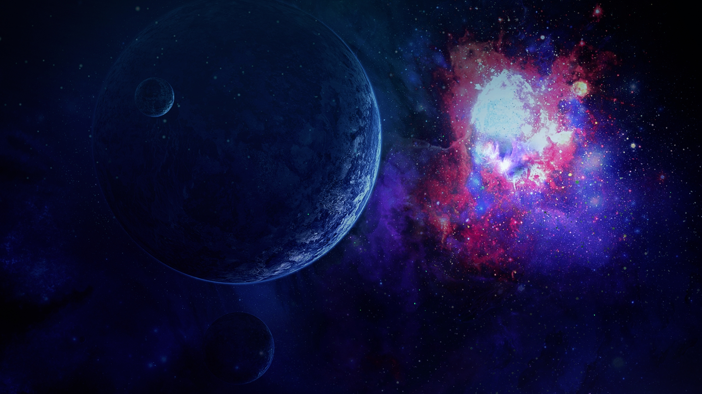
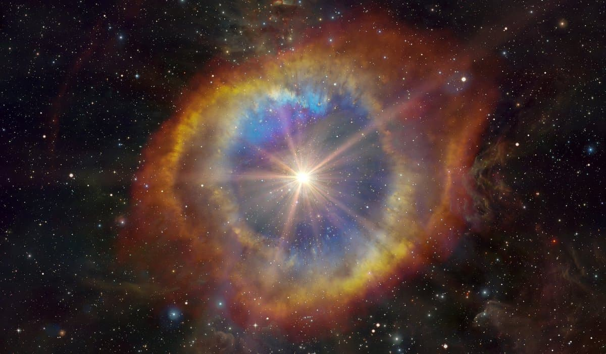

Новые звёзды
Новые звёзды, в астрономической литературе обычно просто «новые» (лат. nova [ед. число], novae [мн. число]) — звёзды, светимость которых внезапно увеличивается в ~103—106 раз (в среднем увеличение светимости — в ~104, блеска — на ~12 звёздных величин).
Механизм вспышки
Все новые звёзды (как и новоподобные и катаклизмические переменные) являются тесными двойными системами, состоящими из белого карлика и звезды-компаньона, находящейся на главной последовательности, либо достигшей в ходе эволюции стадии красного гиганта и заполнившей свою полость Роша. В таких системах происходит перетекание вещества внешних слоёв звезды-компаньона на белый карлик через окрестности точки Лагранжа L1, перетекающее вещество образует вокруг белого карлика аккреционный диск, скорость аккреции на белый карлик постоянна и определяется параметрами звезды-компаньона и отношением масс звёзд-компонентов двойной системы; состав падающего на белый карлик газа типичен для внешних слоёв красных гигантов и звёзд главной последовательности — более 90 % водорода.
Белые карлики представляют собой «выгоревшие» ядра красных гигантов, в ходе эволюции сбросивших свою оболочку; их состав зависит от массы исходной звезды: эволюция менее массивных звёзд ведёт к гелиевым белым карликам, в результате эволюции звёзд с большей массой, в ядре которых шла тройная гелиевая реакция, образуются углеродные белые карлики. В любом случае для развития вспышки новой ключевыми являются два фактора: крайне низкое содержание водорода и вырожденное состояние вещества белого карлика.
Аккрецируемый газ накапливается на поверхности белого карлика, образуя обогащённый водородом слой, из-за крайне высокого ускорения свободного падения на поверхности белого карлика (~106 м/с²) этот слой находится в вырожденном состоянии и дополнительно разогревается потоком из аккреционного диска, скорость падения которого составляет ~1000 км/с. По мере накопления водорода в поверхностном слое и повышения его температуры в обогащённом водородом слое начинают идти термоядерные реакции CNO-цикла, этому способствует и проникновение в вырожденный поверхностный слой углерода из нижележащих слоёв белого карлика. В невырожденных условиях энерговыделение идущих в веществе термоядерных реакций, приводящее к повышению температуры, приводит к росту давления и, соответственно, расширению, понижению плотности и снижению скорости ядерных реакций (пропорциональной плотности и температуре) — то есть установлению саморегулирующегося гидростатического равновесия, как это происходит в недрах звёзд главной последовательности. Однако особенностью нерелятивистского вырожденного газа является крайне слабая зависимость давления от температуры: . Результатом является взрывоподобное ускорение реакций термоядерного синтеза в богатой водородом оболочке, температура резко возрастает до снятия вырождения при данной плотности, и формируется ударная волна, сбрасывающая верхний слой водородной оболочки белого карлика в окружающее пространство. Такое взрывное нарастание скорости термоядерных реакций в вырожденном звёздном веществе является достаточно типичным явлением: сходную природу имеют гелиевые вспышки красных гигантов и углеродная детонация в вырожденных ядрах массивных звёзд и массивных белых карликов при превышении предела Чандрасекара.
Аккрецируемый газ накапливается на поверхности белого карлика, образуя обогащённый водородом слой, из-за крайне высокого ускорения свободного падения на поверхности белого карлика (~106 м/с²) этот слой находится в вырожденном состоянии и дополнительно разогревается потоком из аккреционного диска, скорость падения которого составляет ~1000 км/с. По мере накопления водорода в поверхностном слое и повышения его температуры в обогащённом водородом слое начинают идти термоядерные реакции CNO-цикла, этому способствует и проникновение в вырожденный поверхностный слой углерода из нижележащих слоёв белого карлика. В невырожденных условиях энерговыделение идущих в веществе термоядерных реакций, приводящее к повышению температуры, приводит к росту давления и, соответственно, расширению, понижению плотности и снижению скорости ядерных реакций (пропорциональной плотности и температуре) — то есть установлению саморегулирующегося гидростатического равновесия, как это происходит в недрах звёзд главной последовательности. Однако особенностью нерелятивистского вырожденного газа является крайне слабая зависимость давления от температуры: . Результатом является взрывоподобное ускорение реакций термоядерного синтеза в богатой водородом оболочке, температура резко возрастает до снятия вырождения при данной плотности, и формируется ударная волна, сбрасывающая верхний слой водородной оболочки белого карлика в окружающее пространство. Такое взрывное нарастание скорости термоядерных реакций в вырожденном звёздном веществе является достаточно типичным явлением: сходную природу имеют гелиевые вспышки красных гигантов и углеродная детонация в вырожденных ядрах массивных звёзд и массивных белых карликов при превышении предела Чандрасекара.
Значение
При наблюдении сверхновой SN 1572 в созвездии Кассиопея астроном Тихо Браге отразил это в своих записях как о новой звезде (от лат. de stella nova), дав тем самым рождение термину новая. В своих работах он утверждал, что так как движение близких объектов должно быть заметно относительно неподвижных звёзд, то новая должна находиться очень далеко.
Новые как индикаторы расстояния
Новые имеют хорошие шансы быть использованными в качестве стандартных свеч. Пусть, к примеру, распределение её абсолютной звёздной величины бимодально, с основной вершиной в −7,5 и меньшей в −8,8. Кроме того, абсолютная звёздная величина новой остаётся приблизительно одинаковой (−5,5) около 15 дней после взрыва. Определение расстояний галактик и скоплений галактик при помощи новых дают такую же точность, как и при использовании цефеид.

{kind=link}
{kind=link}